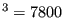
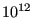
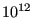

*CONSTRAINT
Keyword type: step
With *CONSTRAINT one can define constraints on design responses in a feasible direction step. It can only be used for design variables of type COORDINATE. Furthermore, exactly one objective function has to be defined within the same feasible direction step (using the *OBJECTIVE keyword).
A constraint is an inequality expressing a condition on a design response function. The inequality can be of type “smaller than or equal” (LE) or “larger than or equal” (GE). The reference value for the inequality is to be specified by a relative portion of an absolute value (the latter in the units used by the user). For instance, suppose the user introduces an absolute value of 20 and a relative value of 0.9 for a LE constraint on the mass. Than the mass is not allowed to exceed 0.9  20 = 18 mass units. If the absolute value is zero, the initial value is taken, e.g. for the mass this corresponds to the mass at the start of the calculation. If no relative value is given 1. is taken.
Right now, the following design responses are allowed:
- ALL-DISP: the square root of the sum of the square of the displacements in all nodes of the structure or of a subset if a node set is defined
- X-DISP: the square root of the sum of the square of the x-displacements in all nodes of the structure or of a subset if a node set is defined
- Y-DISP: the square root of the sum of the square of the y-displacements in all nodes of the structure or of a subset if a node set is defined
- Z-DISP: the square root of the sum of the square of the z-displacements in all nodes of the structure or of a subset if a node set is defined
- EIGENFREQUENCY: all eigenfrequencies calculated in a previous (actually, the eigenvalues, which are the square of the eigenfrequencies). *FREQUENCY step
- MASS: mass of the total structure or of a subset if an element set is defined
- STRAIN ENERGY: internal energy of the total structure or of a subset if an element set is defined
- STRESS: the maximum von Mises stress of the total structure or of a subset if a node set is defined. The maximum is approximated by the Kreisselmeier-Steinhauser function
 | (695) |
where  is the von Mises stress in node i,
is the von Mises stress in node i,  and  are user-defined parameters. The higher the closer
and  are user-defined parameters. The higher the closer  is to the actual maximum (a value of 10 is recommended; the higher this value, the sharper the turns in the function). is the target stress, it should not be too far away from the actual maximum.
is to the actual maximum (a value of 10 is recommended; the higher this value, the sharper the turns in the function). is the target stress, it should not be too far away from the actual maximum.
First line:
Second line:
- the name of the design response
- LE for “smaller than or equal”, GE for “larger than or equal”
- a relative value for the constraint
- an absolute value for the constraint
Repeat this line if needed.
Example:
*SENSITIVITY
*DESIGN RESPONSE,NAME=DESRESP1
MASS,E1
.
.
.
*FEASIBLE DIRECTION
*CONSTRAINT
DESRESP1,LE,,3.
specifies that the mass of element set E1 should not exceed 3 in the user's units.
Example files: opt1.